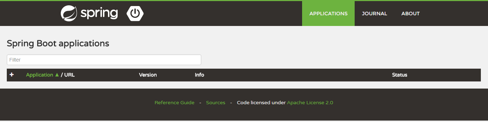
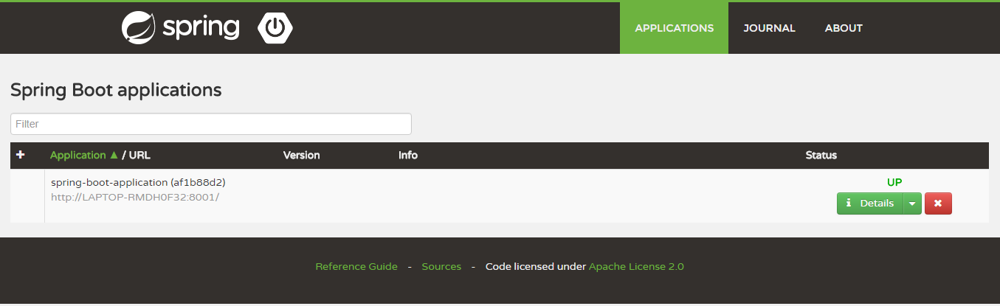
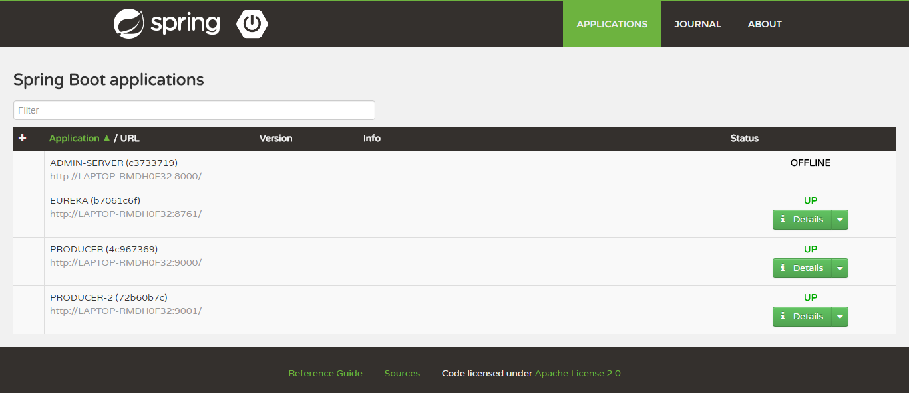
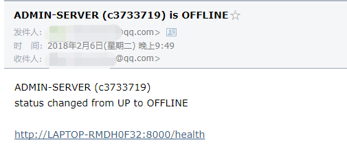

使用spring-boot-admin对spring-boot服务进行监控¶
上一篇文章 使用Spring Boot Actuator监控应用 介绍了Spring Boot Actuator的使用，Spring Boot Actuator提供了对单个Spring Boot的监控，信息包含：应用状态、内存、线程、堆栈等等，比较全面的监控了Spring Boot应用的整个生命周期。
但是这样监控也有一些问题：第一，所有的监控都需要调用固定的接口来查看，如果全面查看应用状态需要调用很多接口，并且接口返回的Json信息不方便运营人员理解；第二，如果Spring Boot应用集群非常大，每个应用都需要调用不同的接口来查看监控信息，操作非常繁琐低效。在这样的背景下，就诞生了另外一个开源软件：Spring Boot Admin。
什么是Spring Boot Admin?¶
Spring Boot Admin 是一个管理和监控Spring Boot 应用程序的开源软件。每个应用都认为是一个客户端，通过HTTP或者使用 Eureka注册到admin server中进行展示，Spring Boot Admin UI部分使用AngularJs将数据展示在前端。
Spring Boot Admin 是一个针对spring-boot的actuator接口进行UI美化封装的监控工具。他可以：在列表中浏览所有被监控spring-boot项目的基本信息，详细的Health信息、内存信息、JVM信息、垃圾回收信息、各种配置信息（比如数据源、缓存列表和命中率）等，还可以直接修改logger的level。
这篇文章给大家介绍如何使用Spring Boot Admin对Spring Boot应用进行监控。
监控单体应用¶
这节给大家展示如何使用Spring Boot Admin监控单个Spring Boot应用。
Admin Server端
项目依赖
<dependencies>
<dependency>
<groupId>de.codecentric</groupId>
<artifactId>spring-boot-admin-server</artifactId>
<version>1.5.6</version>
</dependency>
<dependency>
<groupId>de.codecentric</groupId>
<artifactId>spring-boot-admin-server-ui</artifactId>
<version>1.5.6</version>
</dependency>
</dependencies>
配置文件
server.port=8000
服务端设置端口为：8000。
启动类
@Configuration
@EnableAutoConfiguration
@EnableAdminServer
public class AdminServerApplication {
public static void main(String[] args) {
SpringApplication.run(AdminServerApplication.class, args);
}
}
完成上面三步之后，启动服务端，浏览器访问http://localhost:8000可以看到以下界面：
Admin Client端
项目依赖
<dependencies>
<dependency>
<groupId>de.codecentric</groupId>
<artifactId>spring-boot-admin-starter-client</artifactId>
<version>1.5.6</version>
</dependency>
</dependencies>
配置文件
server.port=8001
spring.boot.admin.url=http://localhost:8000
management.security.enabled=false
- spring.boot.admin.url 配置Admin Server的地址
- management.security.enabled=false 关闭安全验证
启动类
@SpringBootApplication
public class AdminClientApplication {
public static void main(String[] args) {
SpringApplication.run(AdminClientApplication.class, args);
}
}
配置完成之后，启动Client端服务，再次访问服务：http://localhost:8000可以看到客户端的相关信息。
首页会展示被监控的各个服务，点击详情可以查看某个服务的具体监控信息
监控微服务¶
如果我们使用的是单个Spring Boot应用，就需要在每一个被监控的应用中配置Admin Server的地址信息；如果应用都注册在Eureka中就不需要再对每个应用进行配置，Spring Boot Admin会自动从注册中心抓取应用的相关信息。
这里使用四个示例项目来演示：
- spring-boot-admin-server Admin Server端
- spring-cloud-eureka 注册中心
- spring-cloud-producer 应用一，Admin Client端
- spring-cloud-producer-2 应用二，Admin Client端
首先启动注册中心spring-cloud-eureka，如果对Eureka不了解的同学可以查看这篇文章 springcloud注册中心Eureka
Server端
示例项目：spring-boot-admin-server
项目依赖
<dependencies>
<dependency>
<groupId>org.springframework.cloud</groupId>
<artifactId>spring-cloud-starter-eureka</artifactId>
</dependency>
<dependency>
<groupId>de.codecentric</groupId>
<artifactId>spring-boot-admin-server</artifactId>
<version>1.5.6</version>
</dependency>
<dependency>
<groupId>de.codecentric</groupId>
<artifactId>spring-boot-admin-server-ui</artifactId>
<version>1.5.6</version>
</dependency>
</dependencies>
增加了对eureka的支持
配置文件
server:
port: 8000
spring:
application:
name: admin-server
eureka:
instance:
leaseRenewalIntervalInSeconds: 10
client:
registryFetchIntervalSeconds: 5
serviceUrl:
defaultZone: ${EUREKA_SERVICE_URL:http://localhost:8761}/eureka/
management.security.enabled: false
配置文件中添加了eureka的相关配置
启动类
@Configuration
@EnableAutoConfiguration
@EnableDiscoveryClient
@EnableAdminServer
public class AdminServerApplication {
public static void main(String[] args) {
SpringApplication.run(AdminServerApplication.class, args);
}
}
上述步骤完成之后，启动Server端。
Client端
示例项目：spring-cloud-producer和spring-cloud-producer-2
项目依赖
<dependencies>
<dependency>
<groupId>org.springframework.cloud</groupId>
<artifactId>spring-cloud-starter-eureka</artifactId>
</dependency>
<dependency>
<groupId>de.codecentric</groupId>
<artifactId>spring-boot-admin-starter-client</artifactId>
<version>1.5.6</version>
</dependency>
</dependencies>
配置文件
server:
port: 9000
spring:
application:
name: producer
eureka:
client:
serviceUrl:
defaultZone: http://localhost:8761/eureka/
management:
security:
enabled: false
我们发现配置文件中并没有添加Admin Server的相关配置
启动类
@SpringBootApplication
@EnableDiscoveryClient
public class ProducerApplication {
public static void main(String[] args) {
SpringApplication.run(ProducerApplication.class, args);
}
}
Web层
@RequestMapping("/hello")
public String index(@RequestParam String name) {
logger.info("request one/two name is "+name);
return "hello "+name+"，this is first messge";
}
web层添加了/hello的请求方法，方法中使用one/two区别是哪个应用。spring-cloud-producer-2和spring-cloud-producer代码类似，具体大家可以查看示例代码。
完成上面配置之后，分别启动项目：spring-cloud-producer和spring-cloud-producer-2，浏览器访问http://localhost:8000 可以看到以下界面：
从上图可以看出Admin Server监控了四个实例，包括Server自己，注册中心、两个PRODUCER。说明Admin Server自动从服务中心抓取了所有的实例信息并进行了监控。点击Detail可以具体查看某一个示例的监控信息。
邮件告警¶
Spring Boot Admin将微服务中所有应用信息在后台进行了展示，非常方便我们对微服务整体的监控和治理。但是我们的运营人员也不可能一天24小时盯着监控后台，因此如果服务有异常的时候，有对应的邮件告警就太好了，其实Spring Boot Admin也给出了支持。
我们对上面的示例项目spring-boot-admin-server进行改造。
添加依赖
<dependency>
<groupId>org.springframework.boot</groupId>
<artifactId>spring-boot-starter-mail</artifactId>
</dependency>
增加了邮件发送的starter包
配置文件
spring:
mail:
host: smtp.qq.com
username: xxxxx@qq.com
password: xxxx
properties:
mail:
smtp:
auth: true
starttls:
enable: true
required: true
boot:
admin:
notify:
mail:
from: xxxx@qq.com
to: xxxx@qq.com
# http://codecentric.github.io/spring-boot-admin/1.5.6/#mail-notifications
在配置文件中添加邮件发送相关信息：邮件的发送者、接受者、协议、移动授权码等。关于Spring Boot邮件发送，可以参考springboot(十)：邮件服务
配置完成后，重新启动项目spring-boot-admin-server，这样Admin Server就具备了邮件告警的功能，默认情况下Admin Server对Eureka中的服务上下线都进行了监控，当服务上下线的时候我们就会收到如下邮件：
当然这只是最基本的邮件监控，在实际的使用过程中，需要根据我们的情况对邮件告警内容进行自定义，比如监控堆内存的使用情况，当到达一定比例的时候进行告警等。